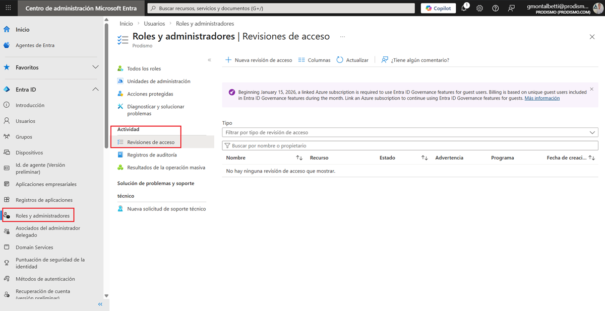

Procedimiento de Derechos de Acceso
1 OBJETIVO
Regular los controles y establecer los procedimientos para asegurar que los derechos de acceso a Sistemas IT, Redes, Aplicaciones Internas y datos se asignen bajo el principio de mínimos privilegios, con un proceso formal de solicitud, aprobación y revisión periódica, garantizando la trazabilidad y evitando accesos no autorizados, en cumplimiento de normativas de ISO/IEC 27001:2022, así como los requisitos del marco TISAX y clientes automotrices.
2 SOLICITUD, VERIFICACIÓN Y APROBACIÓN DE ACCESOS
A. Objetivo
Establecer los procedimientos para asegurar los derechos de acceso a Sistemas IT, Redes, Aplicaciones Internas, MS Teams, Cuentas de Correo Corporativas y Bases de Datos.
B. Alcance:
- Aplicable a todos los sistemas (SIP/SIP4.0, redes Prodismo, servidores, bases de datos).
- Cubre cuentas normales, privilegiadas (admin) y técnicas (servicios).
C. Procedimiento:
- Solicitud:
- El usuario/jefe de departamento completa el F421-IT-1
Formulario de Solicitud de Acceso, indicando:
- Sistemas/recursos necesarios.
- Justificación basada en responsabilidades laborales.
- El usuario/jefe de departamento completa el F421-IT-1
Formulario de Solicitud de Acceso, indicando:
- Verificación:
- El DIT valida que el rol del usuario justifica los accesos solicitados. (Puede solicitar la justificación a RRHH, si el jefe de departamento no responde).
- El DIT verifica la compatibilidad con políticas de seguridad.
- Aprobación:
- Responsable de Seguridad o IT Manager aprueba/rechaza la solicitud para accesos críticos.
- Implementación:
- Departamento de IT asigna permisos en sistemas (ej.: Active Directory) y registra en: F421-IT-1 Formulario de Solicitud de Acceso
D. Documentos de Referencia:
3 ASIGNACIÓN BASADA EN «NECESIDAD DE SABER»
A. Objetivo
Establecer los procedimientos basado en asignaciones predefinidas para denegar por defecto, permitir por excepción explícitamente justificada.
B. Alcance:
- Define niveles de acceso según roles (ej.: ingeniero de diseño vs. administración).
C. Procedimiento:
- Clasificación de Recursos:
- Catalogar sistemas/datos como Confidencial, Restringido o Público MC131-IT-1 Política Clasificación de Datos
- Asignación de Permisos:
- Ejemplo:
- Redes Internas (dbComercial): Solo equipo de Comercial tiene permisos de edición.
- SIP4.0: Departamento Administración solo ve módulos de facturación/pagos.
- Ejemplo:
- Excepciones:
- Requieren aprobación del IT Manager y justificación técnica.
D. Herramientas:
- Matriz de roles vs. permisos M421-IT-3 Matriz de Roles y Permisos
4 REVISIÓN PERIÓDICA DE DERECHOS DE ACCESO
A. Objetivo
Establecer los procedimientos para la revisión periódica de los derechos de accesos de los usuarios.
B. Alcance:
- Auditoría cuatrimestral de permisos en:
- Cuentas de usuario normales.
- Cuentas privilegiadas (admin, root).
- Cuentas técnicas (servicios automatizados).
C. Procedimiento:
- Extracción de Datos:
- Identity Governance

- Identity Governance
- Validación:
- Comparar permisos asignados vs. roles actuales (cross-check con RRHH, de ser necesario).
- Ajustes:
- Revocar accesos obsoletos (ej.: empleados cambiados de departamento/área).
- Documentar cambios en F421-IT-4 Informe de Revisión Periódica
D. Frecuencia:
- Trimestral para cuentas normales.
- Mensual para cuentas privilegiadas.
E. Documentos de Referencia:
5 GESTIÓN DE CUENTAS PRIVILEGIADAS
A. Objetivo
Establecer los procedimientos para la gestión de cuentas privilegiadas.
B. Alcance:
- Accesos administrativos (ej.: administradores de dominio, root en Linux, DBA).
C. Procedimiento:
- Control Estricto:
- Almacenar credenciales en bóveda de contraseñas (ej.: Bitwarden).
- Acceso Just-in-Time:
- Solicitar aprobación previa para usar credenciales
Referencia: P421-IT-2 Procedimiento para Cuentas Privilegiadas
- Solicitar aprobación previa para usar credenciales
- Monitoreo:
- Registrar todas las acciones realizadas con cuentas privilegiadas (ej.: logs).
D. Regla Clave:
- No compartir credenciales de administrador. Usar cuentas individuales para trazabilidad.
6 RESPUESTA A INCIDENCIAS DE PERMISOS
A. Objetivo
Garantizar la protección de la información ante incidentes de permisos mediante controles y procedimientos seguros de acceso.
B. Alcance:
- Accesos no autorizados, permisos excesivos o mal asignados.
C. Procedimiento:
- Detección:
- Alertas de SIEM por actividades sospechosas (ej.: usuario normal accediendo a backups).
- Contención:
- Revocar permisos inmediatamente.
- Investigación:
- Identificar causa raíz (ej.: solicitud no aprobada, error de configuración).
- Mejora:
- Actualizar políticas o capacitar al personal involucrado.
D. Documentos de Referencia:
7 RESUMEN DE DOCUMENTACIÓN REQUERIDA
| Procedimiento | Documentos Asociados |
|---|---|
| Solicitud y aprobación |
F421-IT-1 Formulario de Solicitud de Acceso MC412-IT-1 Política de Autenticación y Control de Accesos |
| Principio de mínimos privilegios |
MC421-IT-2 Política de Mínimos Privilegios M421-IT-1 Matriz de Roles y Permisos |
| Revisión periódica | F421-IT-4 Informe de Revisión Periódica |
| Cuentas privilegiadas | P421-IT-2 Procedimiento para Cuentas Privilegiadas |
| Incidentes |
P421-IT-7 Procedimiento Respuesta ante Incidentes P121-IT-1 Procedimiento de Gestión de Incidentes |
Recomendaciones Clave
- Automatizar: Usar herramienta Microsoft Identity Manager para flujos de aprobación.
- Capacitación: Entrenar a jefes de departamento en la justificación de accesos.
8 REVISIONES DEL DOCUMENTO
| Rev. N° | Fecha | Descripción |
|---|---|---|
| 0 | 25/8/2025 | Primera Emisión del documento |
| 1 | 30/1/2026 | Revisión completa del documento |